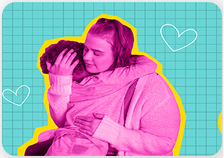
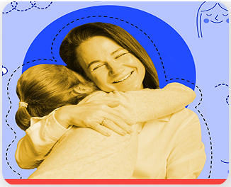

Tejiendo vínculos
Tejiendo vínculos es una estrategia de comunicación para vincular a madres, padres, docentes y cuidadores al Sistema Nacional de Cuidados.

Te compartimos algunos recursos visuales pensados para ayudarte a hablar de temas importantes con las niñas y los niños: educación emocional, salud, tecnología, crianza y bienestar con información útil, clara y cercana.
Salud y crianza
Parte de la estrategia de Vida Saludable que promueve el bienestar infantil y fomenta el cuidado y desarrollo de la niñez como una responsabilidad colectiva.

Etapas de neurodesarrollo y Pedagogía
Proporcionar información acerca de las distintas etapas de neurodesarrollo que ayuden a madres, padres y cuidadores a apoyar el crecimiento integral de niñas y niños y detectar oportunamente dificultades durante el crecimiento.
Acompañamiento para las pantallas
Acompañar a madres, padres y cuidadores en la elección de contenidos audiovisuales que contribuyan al desarrollo saludable y la protección de niñas, niños y adolescentes.
